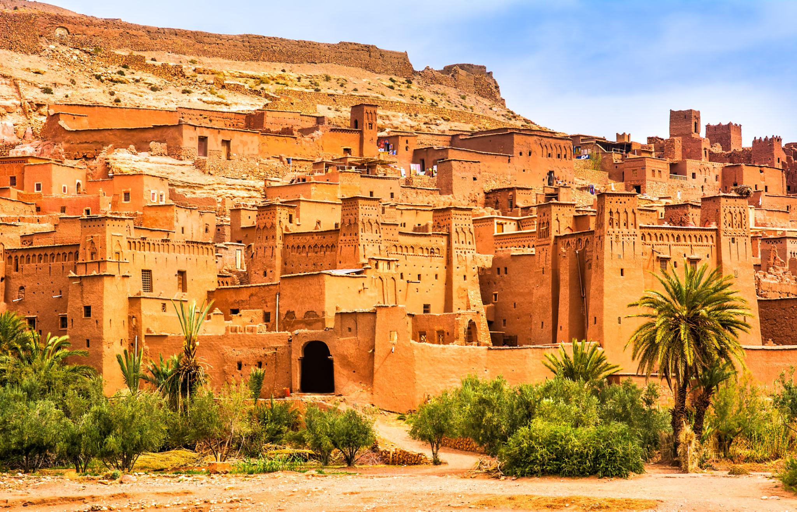
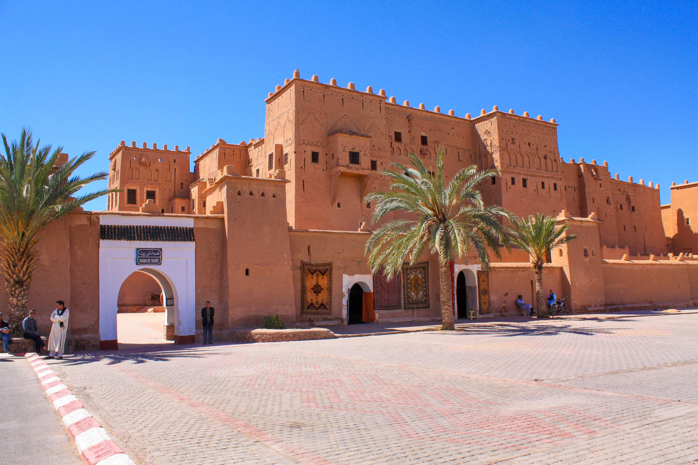
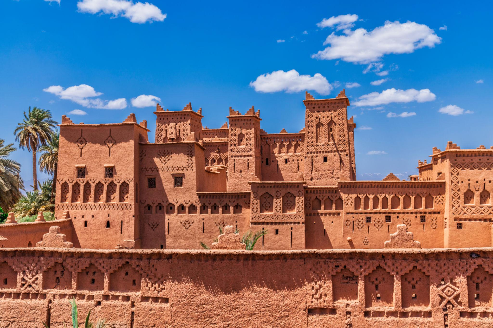
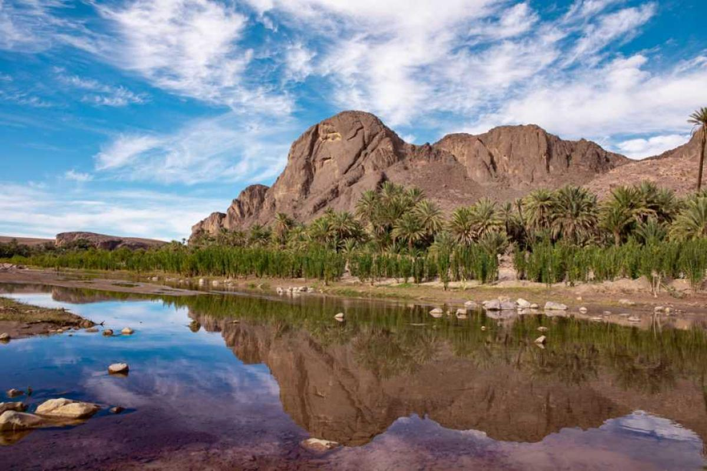
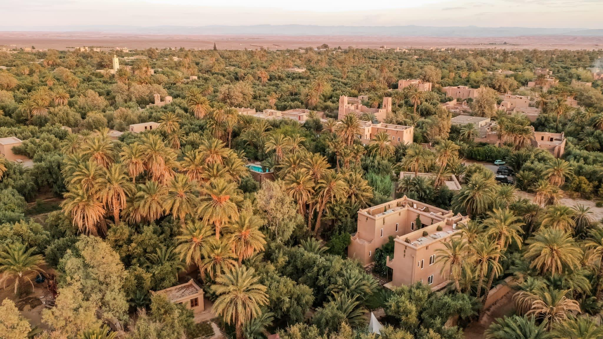
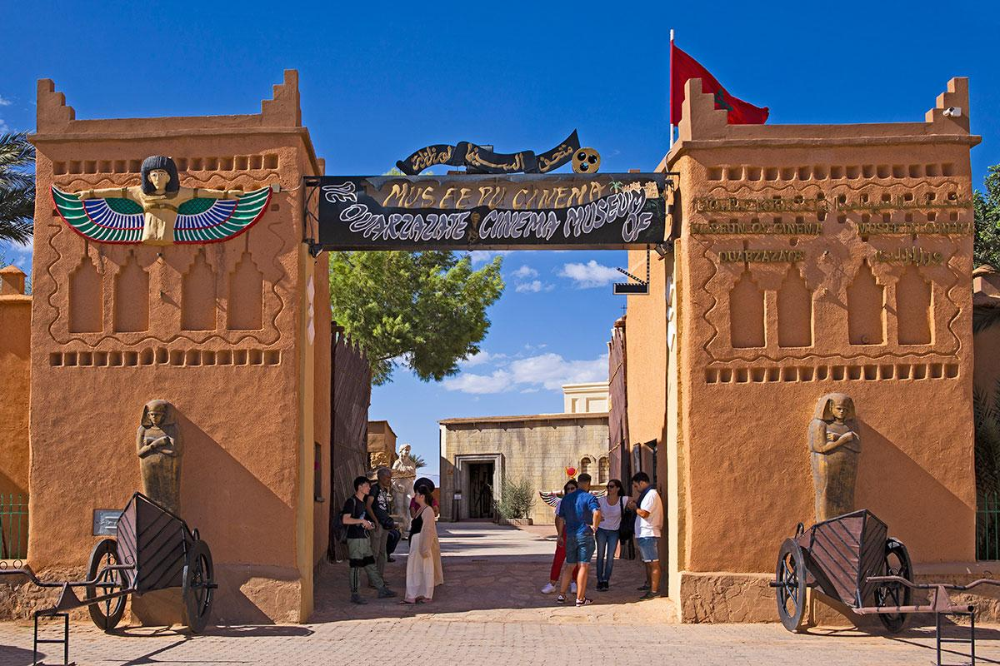
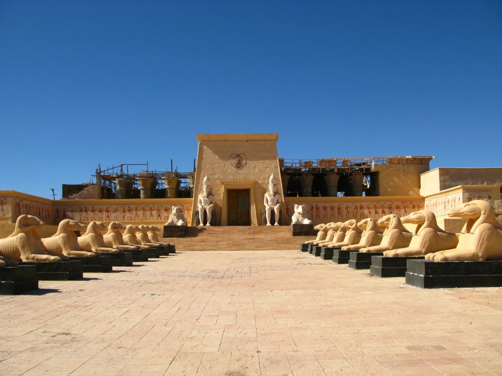
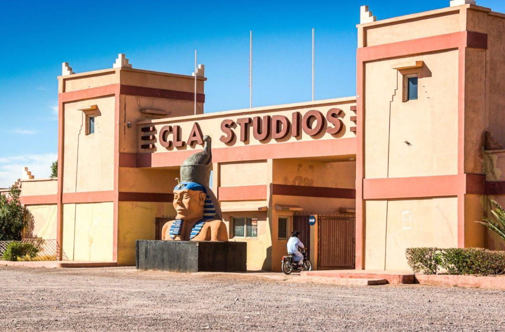
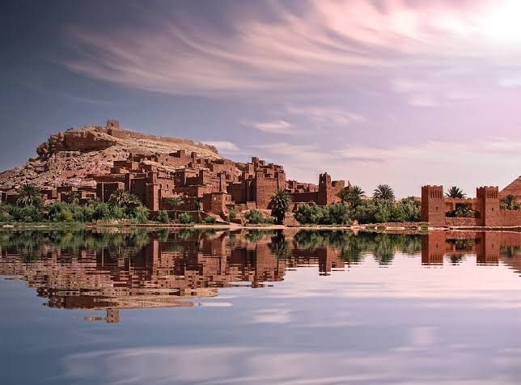

مآثر تاريخية
قصبة آيت بن حدو
تجمع بنايات تقليدية، شيدت من الطين ومحاطة بسور دفاعي مقوى بالأبراج ...
تعرف على المزيد →مرحبا بكم في جنوب المغرب
اكتشف المآثر التاريخية والقصبات العريقة وسحر الطبيعة...
اكتشف الوجهات
تعرف على المنطقة
تعرف على أبرز الأماكن السياحية في ورزازات ونواحيها

تجمع بنايات تقليدية، شيدت من الطين ومحاطة بسور دفاعي مقوى بالأبراج ...
تعرف على المزيد →

قصبة تاريخية تقع في واحة سكورة وتتميز بعمارتها التقليدية ...
تعرف على المزيد →
واحة طبيعية تتميز بأشجار النخيل والمناظر الجبلية المحيطة بها ...
تعرف على المزيد →

بحيرة وسد في محيط ورزازات، مناسبة للاستمتاع بالمناظر الطبيعية والتقاط الصور، مع مراعاة ظروف الوصول والسلامة...
تعرف على المزيد →
يضم معدات وديكورات سينمائية تعرف بتاريخ التصوير السينمائي في المدينة...
تعرف على المزيد →
من أشهر مواقع تصوير الأفلام في المنطقة، وتتيح للزوار التعرف على ديكورات ومواقع استُخدمت في الإنتاج السينمائي، بحسب الجولات المتاحة...
تعرف على المزيد →
استوديوهات سينمائية في منطقة ورزازات، مرتبطة بالإنتاجات السينمائية وتصوير المشاهد داخل ديكورات تاريخية ضخمة...
تعرف على المزيد →
هويتنا
تتميز ورزازات بقصباتها التاريخية وعمارتها التقليدية ومناظرها الطبيعية، كما تشتهر بارتباطها بعالم السينما . وتعكس المنطقة جانبا مميزا من ثرات الجنوب المغربي.
تلقب ورزازات ب هوليود أفريقيا ، بفضل استوديوهاتها السينمائية التي احتضنت إنتاجات عالمية . كما تتميز بموقعها بين جبال الأطلس والصحراء ، مما يجعلها وجهة تجمع بين الطبيعة والتراث والسينما .
حول المدينةاكتشف جوانب جديدة من ورزازات
تعرف على جمال ورزازات وتاريخها وتقاليدها ، واكتشف معالمها المميزة ، وجهة بعد أخرى
العودة إلى الأعلى